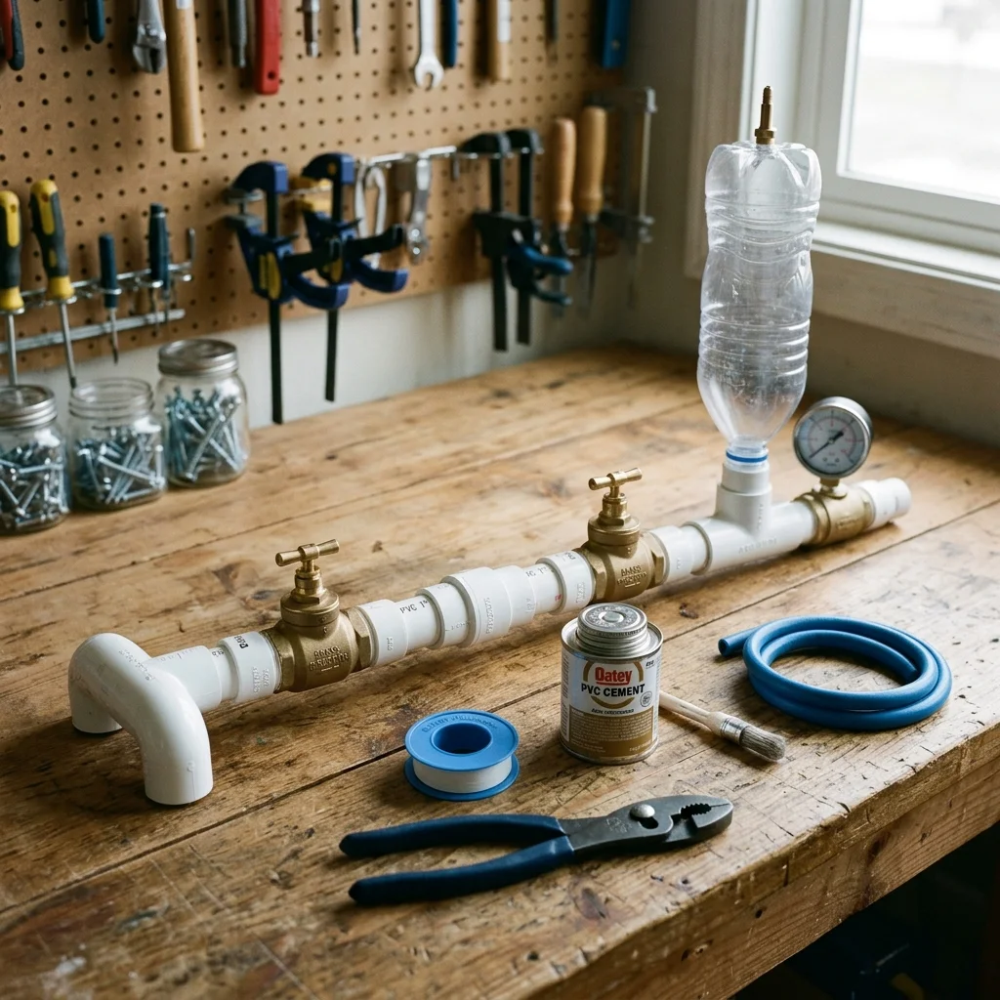

Carregando sabedoria ancestral...
Artículos Recomendados

Água 49KBomba de água manual de PVC (Bomba Ram)
Construir uma bomba hidráulica de PVC que eleve hidrômetros sem eletricidade ou combustível, aproveitando o golpe de aríete.
 Água
16K
Água
16K
Filtro Biochar para purificação do solo
Aprenda a produzir carvão pirolisado (Biochar) para filtrar toxinas, fixar carbono e melhorar a fertilidade dos solos agrícolas.
 Aquecimento
61,8K
Aquecimento
61,8K
Panelas de barro e fogão de velas
Aprenda a construir um sistema de aquecimento radiante natural usando potes de terracota e pequenas velas. Calor ecológico e económico sem eletricidade.
Comentarios y Experiencias